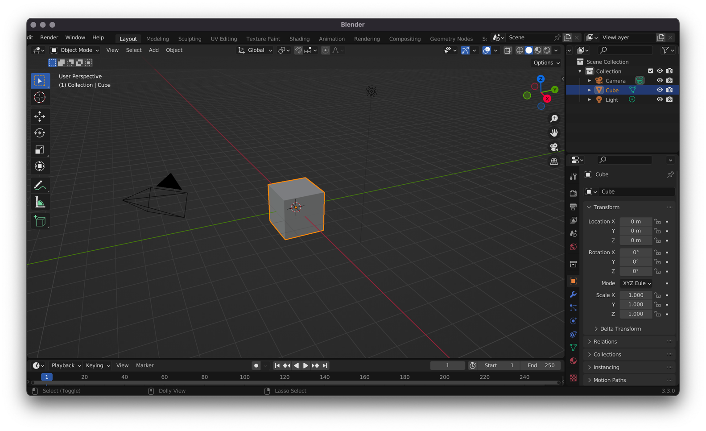
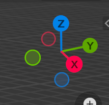
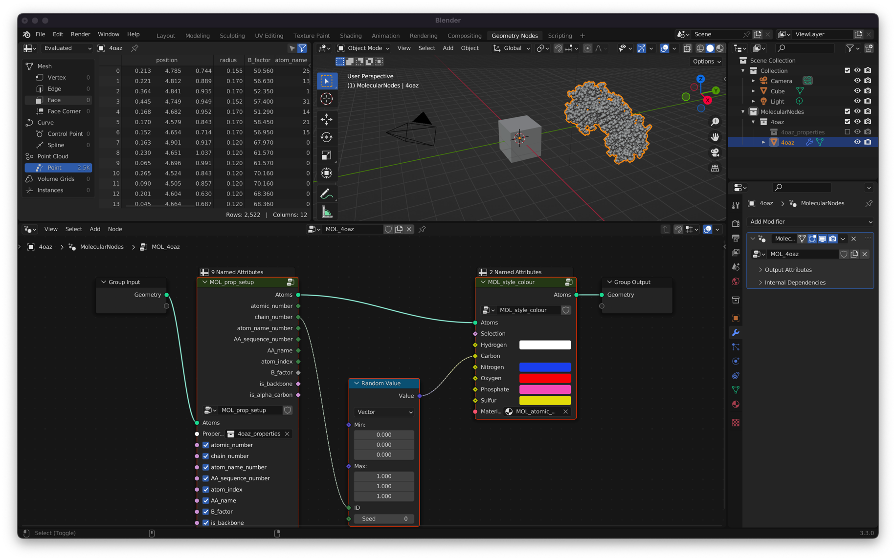

1. Introduction to Blender
Blender is a complicated program and it is easy to get overwhelmed. We are going to look at it bit by bit, and ultimately only use a fraction of what Blender is capable of.
Workspaces
Blender has a lot of workspaces. It’s a tool that can be used for a nearly unlimited number of tasks. People use it for 2D animated movies, 3D animated movies and TV shows, motion graphics & VFX, creating assets for blockbuster videogames and even for making cool renderings of proteins.
Because Blender can be used for so many different purposes, there is a lot of functionality that can be completely overwhelming when you are first starting out. Thankfully for the work that we are wanting to do, we will only need a small subset of what Blender can offer, and so we can limit ourselves to a couple of workspaces.
The 3D Viewport

This 3D viewport will seem familiar if you have used other programs such as PyMol, ChimeraX & VMD. You can move the camera around just like in those other programs.
You can rotate the camera view either using the middle mouse button MMB, or using your touch pad if you are on a laptop. You can also click and drag the axis widget to rotate the camera.
You can pan the camera using Shift + MMB
The main difference is that you can also manipulate the 3D scene in front of you. You can select objects with a left click of the mouse, and move them around by Grabbing them with the G key.
The main actions that you use the 3D Viewport for are:
G - Grabbing: Moving an object around in 3D space.
S - Scaling: Changing the relative size of an object.
R - Rotating: Rotating the object in 3D space.
The Grid and Axes
In the 3D viewport, much like in real life, there are 3 axes of possible movement and direction. Inside of Blender they are X Y and Z. X and Y form the flat grid that you see in the viewport, being coloured TODO red and green respectively, while Z is the blue vertical axis. These are labelled and highlighted on the axis widget, which is present in the top right corner of the viewport. This will rotate as you rotate the view, so it can always be used as a reference point.

Geometry Nodes Editor
This is where we edit the node graph for Molecular Nodes. The node graph is a program you create, that is read and executed by Blender from left to right. Each node performs an action on the geometry that is passed into it, and the result of that action is passed out to the right.
Think of it as creating a set of rules for the computer to follow. You define the rules, and the computer can follow those same rules, even if you start with a different data set.
Combining multiple different nodes you can create protein models and complex 3D scenes.

Shader Editor
This is where you can change the colour of something. Coming from a program like PyMol and ChimeraX, you might be used to the idea of just changing the colour of something. “I want my protein to be red.”, and then just making that change with a colour picker.
When dealing with 3D scenes, it’s not quite as simple as that anymore. Blender is a 3D rendering program, which means it takes into account not just the colour or something, but other physical properties of an object when calculating how it looks. You can change how metallic a surface is, along with how rough it is and a lot of other complex components in 3D graphics. Try not to worry too much about what you are playing around with, just move the sliders one way and the other to try and find a look that you like. You will however be able to change the colour of something by changing the primary RGB selector.